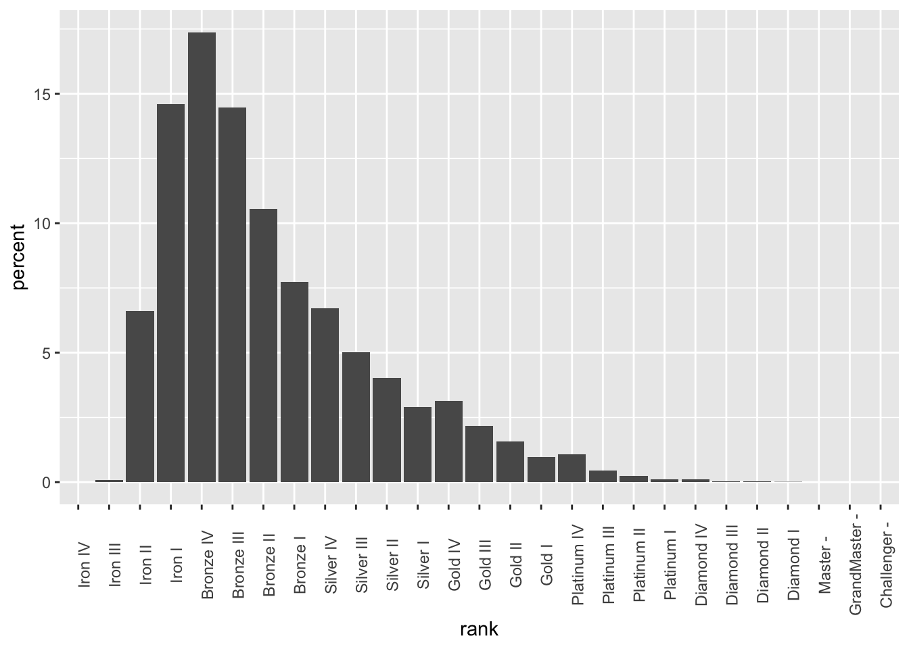
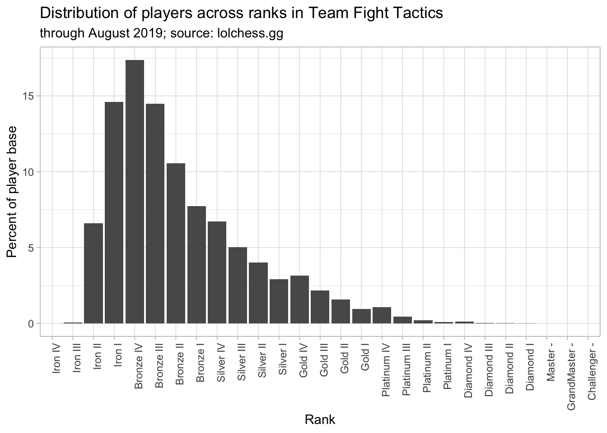
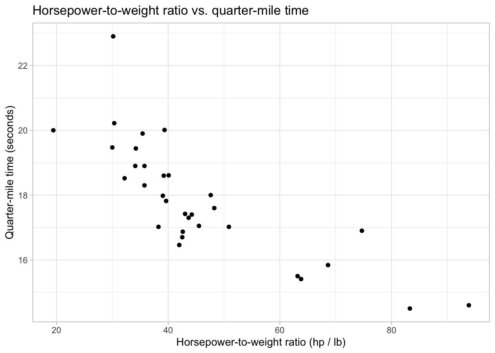

Data visualization and analysis
According to the first-order difference criterion, the optimal clustering similarity was 98%. However, for various reasons (mostly due to physical limitations), we ended up choosing a 95% similarity threshold.
After determining this, we then used the representative sequences found in 0.95.fa and queried them against our metagenomes. Thus, for each metagenome, we had an output file containing all the relevant hits. We then used a Python script to summarize the abundance and presence of each these representative sequences across our metagenomes. This information can be found in data/abundance_presence.tsv.
Our job now is to determine which of these clusters to include. While it would be nice to design primers for all of the sequences and
Our goal is to reproduce the following graph:

Plot of first order differences by gene cluster inclusion
We’ll begin by learning about visualizations. I have an introduction to ggplot2 here, but we will begin with quick review before we start tackling this one.
Basic visualizations
We’ll begin by loading in our required packages.
library(ggplot2)
library(tidyverse)Before we tackle our goal, let’s warm up on mtcars.
Exercise 2.1
- Reproduce the below graph. How can it be improved?:
Importing and transforming data
Let’s load in the tft_stats.tsv data set.
tft_stats <- read.delim("data/practice_data/tft_stats.tsv")
tft_stats## rank percent
## 1 Iron IV 0.00
## 2 Iron III 0.08
## 3 Iron II 6.61
## 4 Iron I 14.59
## 5 Bronze IV 17.37
## 6 Bronze III 14.47
## 7 Bronze II 10.56
## 8 Bronze I 7.74
## 9 Silver IV 6.72
## 10 Silver III 5.02
## 11 Silver II 4.02
## 12 Silver I 2.91
## 13 Gold IV 3.15
## 14 Gold III 2.18
## 15 Gold II 1.58
## 16 Gold I 0.96
## 17 Platinum IV 1.07
## 18 Platinum III 0.44
## 19 Platinum II 0.23
## 20 Platinum I 0.11
## 21 Diamond IV 0.12
## 22 Diamond III 0.04
## 23 Diamond II 0.02
## 24 Diamond I 0.01
## 25 Master - 0.00
## 26 GrandMaster - 0.00
## 27 Challenger - 0.00We can quickly visualize this by throwing it into ggplot:
tft_stats %>%
ggplot(aes(rank, percent)) +
geom_col() +
theme(axis.text.x = element_text(angle = 90))
Note that ggplot will automatically reorder your data if it doesn’t think it’s sorted. We can get around this by telling ggplot that the data already is in the correct order (adapted from this Stack Overflow post):
tft_stats$rank <- factor(tft_stats$rank, levels = tft_stats$rank)Now, when we plot the data frame, the order will remain:
tft_stats %>%
ggplot(aes(rank, percent)) +
geom_col() +
theme(axis.text.x = element_text(angle = 90)) 
Let’s go ahead and fix this up:
tft_stats %>%
ggplot(aes(rank, percent)) +
theme_light() +
geom_col() +
labs(x = "Rank",
y = "Percent of player base",
title = "Distribution of players across ranks in Team Fight Tactics",
subtitle = "through August 2019; source: lolchess.gg") +
theme(axis.text.x = element_text(angle = 90, hjust = 1)) 
We’re going to use the mutate function. mutate lets us add columns to a data frame based on other columns. For instance, we can add a column to mtcars to store the ratio between hp and wt:
mtcars %>%
mutate(hp_to_wt = hp / wt)## mpg cyl disp hp drat wt qsec vs am gear carb hp_to_wt
## 1 21.0 6 160.0 110 3.90 2.620 16.46 0 1 4 4 41.98473
## 2 21.0 6 160.0 110 3.90 2.875 17.02 0 1 4 4 38.26087
## 3 22.8 4 108.0 93 3.85 2.320 18.61 1 1 4 1 40.08621
## 4 21.4 6 258.0 110 3.08 3.215 19.44 1 0 3 1 34.21462
## 5 18.7 8 360.0 175 3.15 3.440 17.02 0 0 3 2 50.87209
## 6 18.1 6 225.0 105 2.76 3.460 20.22 1 0 3 1 30.34682
## 7 14.3 8 360.0 245 3.21 3.570 15.84 0 0 3 4 68.62745
## 8 24.4 4 146.7 62 3.69 3.190 20.00 1 0 4 2 19.43574
## 9 22.8 4 140.8 95 3.92 3.150 22.90 1 0 4 2 30.15873
## 10 19.2 6 167.6 123 3.92 3.440 18.30 1 0 4 4 35.75581
## 11 17.8 6 167.6 123 3.92 3.440 18.90 1 0 4 4 35.75581
## 12 16.4 8 275.8 180 3.07 4.070 17.40 0 0 3 3 44.22604
## 13 17.3 8 275.8 180 3.07 3.730 17.60 0 0 3 3 48.25737
## 14 15.2 8 275.8 180 3.07 3.780 18.00 0 0 3 3 47.61905
## 15 10.4 8 472.0 205 2.93 5.250 17.98 0 0 3 4 39.04762
## 16 10.4 8 460.0 215 3.00 5.424 17.82 0 0 3 4 39.63864
## 17 14.7 8 440.0 230 3.23 5.345 17.42 0 0 3 4 43.03087
## 18 32.4 4 78.7 66 4.08 2.200 19.47 1 1 4 1 30.00000
## 19 30.4 4 75.7 52 4.93 1.615 18.52 1 1 4 2 32.19814
## 20 33.9 4 71.1 65 4.22 1.835 19.90 1 1 4 1 35.42234
## 21 21.5 4 120.1 97 3.70 2.465 20.01 1 0 3 1 39.35091
## 22 15.5 8 318.0 150 2.76 3.520 16.87 0 0 3 2 42.61364
## 23 15.2 8 304.0 150 3.15 3.435 17.30 0 0 3 2 43.66812
## 24 13.3 8 350.0 245 3.73 3.840 15.41 0 0 3 4 63.80208
## 25 19.2 8 400.0 175 3.08 3.845 17.05 0 0 3 2 45.51365
## 26 27.3 4 79.0 66 4.08 1.935 18.90 1 1 4 1 34.10853
## 27 26.0 4 120.3 91 4.43 2.140 16.70 0 1 5 2 42.52336
## 28 30.4 4 95.1 113 3.77 1.513 16.90 1 1 5 2 74.68605
## 29 15.8 8 351.0 264 4.22 3.170 14.50 0 1 5 4 83.28076
## 30 19.7 6 145.0 175 3.62 2.770 15.50 0 1 5 6 63.17690
## 31 15.0 8 301.0 335 3.54 3.570 14.60 0 1 5 8 93.83754
## 32 21.4 4 121.0 109 4.11 2.780 18.60 1 1 4 2 39.20863And we can go ahead and plot this new variable right away:
mtcars %>%
mutate(hp_to_wt = hp / wt) %>%
ggplot(aes(x = hp / wt, y = qsec)) +
geom_point() +
labs(x = "Horsepower-to-weight ratio (hp / lb)",
y = "Quarter-mile time (seconds)",
title = "Horsepower-to-weight ratio vs. quarter-mile time") +
theme_light()
Just like with summarise, we can create multiple new variables at the same time with mutate:
mtcars %>%
mutate(hp_to_wt = hp / wt,
proj_hsec = 2 * qsec)## mpg cyl disp hp drat wt qsec vs am gear carb hp_to_wt proj_hsec
## 1 21.0 6 160.0 110 3.90 2.620 16.46 0 1 4 4 41.98473 32.92
## 2 21.0 6 160.0 110 3.90 2.875 17.02 0 1 4 4 38.26087 34.04
## 3 22.8 4 108.0 93 3.85 2.320 18.61 1 1 4 1 40.08621 37.22
## 4 21.4 6 258.0 110 3.08 3.215 19.44 1 0 3 1 34.21462 38.88
## 5 18.7 8 360.0 175 3.15 3.440 17.02 0 0 3 2 50.87209 34.04
## 6 18.1 6 225.0 105 2.76 3.460 20.22 1 0 3 1 30.34682 40.44
## 7 14.3 8 360.0 245 3.21 3.570 15.84 0 0 3 4 68.62745 31.68
## 8 24.4 4 146.7 62 3.69 3.190 20.00 1 0 4 2 19.43574 40.00
## 9 22.8 4 140.8 95 3.92 3.150 22.90 1 0 4 2 30.15873 45.80
## 10 19.2 6 167.6 123 3.92 3.440 18.30 1 0 4 4 35.75581 36.60
## 11 17.8 6 167.6 123 3.92 3.440 18.90 1 0 4 4 35.75581 37.80
## 12 16.4 8 275.8 180 3.07 4.070 17.40 0 0 3 3 44.22604 34.80
## 13 17.3 8 275.8 180 3.07 3.730 17.60 0 0 3 3 48.25737 35.20
## 14 15.2 8 275.8 180 3.07 3.780 18.00 0 0 3 3 47.61905 36.00
## 15 10.4 8 472.0 205 2.93 5.250 17.98 0 0 3 4 39.04762 35.96
## 16 10.4 8 460.0 215 3.00 5.424 17.82 0 0 3 4 39.63864 35.64
## 17 14.7 8 440.0 230 3.23 5.345 17.42 0 0 3 4 43.03087 34.84
## 18 32.4 4 78.7 66 4.08 2.200 19.47 1 1 4 1 30.00000 38.94
## 19 30.4 4 75.7 52 4.93 1.615 18.52 1 1 4 2 32.19814 37.04
## 20 33.9 4 71.1 65 4.22 1.835 19.90 1 1 4 1 35.42234 39.80
## 21 21.5 4 120.1 97 3.70 2.465 20.01 1 0 3 1 39.35091 40.02
## 22 15.5 8 318.0 150 2.76 3.520 16.87 0 0 3 2 42.61364 33.74
## 23 15.2 8 304.0 150 3.15 3.435 17.30 0 0 3 2 43.66812 34.60
## 24 13.3 8 350.0 245 3.73 3.840 15.41 0 0 3 4 63.80208 30.82
## 25 19.2 8 400.0 175 3.08 3.845 17.05 0 0 3 2 45.51365 34.10
## 26 27.3 4 79.0 66 4.08 1.935 18.90 1 1 4 1 34.10853 37.80
## 27 26.0 4 120.3 91 4.43 2.140 16.70 0 1 5 2 42.52336 33.40
## 28 30.4 4 95.1 113 3.77 1.513 16.90 1 1 5 2 74.68605 33.80
## 29 15.8 8 351.0 264 4.22 3.170 14.50 0 1 5 4 83.28076 29.00
## 30 19.7 6 145.0 175 3.62 2.770 15.50 0 1 5 6 63.17690 31.00
## 31 15.0 8 301.0 335 3.54 3.570 14.60 0 1 5 8 93.83754 29.20
## 32 21.4 4 121.0 109 4.11 2.780 18.60 1 1 4 2 39.20863 37.20Let’s go ahead and use mutate to add a cumulative percentage column to tft_stats. This is done with the cumsum function:
tft_stats %>%
mutate(cumulative_percent = cumsum(percent)) ## rank percent cumulative_percent
## 1 Iron IV 0.00 0.00
## 2 Iron III 0.08 0.08
## 3 Iron II 6.61 6.69
## 4 Iron I 14.59 21.28
## 5 Bronze IV 17.37 38.65
## 6 Bronze III 14.47 53.12
## 7 Bronze II 10.56 63.68
## 8 Bronze I 7.74 71.42
## 9 Silver IV 6.72 78.14
## 10 Silver III 5.02 83.16
## 11 Silver II 4.02 87.18
## 12 Silver I 2.91 90.09
## 13 Gold IV 3.15 93.24
## 14 Gold III 2.18 95.42
## 15 Gold II 1.58 97.00
## 16 Gold I 0.96 97.96
## 17 Platinum IV 1.07 99.03
## 18 Platinum III 0.44 99.47
## 19 Platinum II 0.23 99.70
## 20 Platinum I 0.11 99.81
## 21 Diamond IV 0.12 99.93
## 22 Diamond III 0.04 99.97
## 23 Diamond II 0.02 99.99
## 24 Diamond I 0.01 100.00
## 25 Master - 0.00 100.00
## 26 GrandMaster - 0.00 100.00
## 27 Challenger - 0.00 100.00And we can now add this line to our graph as another layer:
tft_stats %>%
mutate(cumulative = cumsum(percent)) %>%
ggplot(aes(x = rank, group = 1)) +
theme_light() +
geom_col(aes(y = percent)) +
geom_line(aes(y = cumulative), color = "red")Exercise 2.2
There are several things wrong with the tft_stats graph.
- What’s wrong with the y-axis? Use
mutateto correct this. - What’s wrong with the cumulative percentage line? How can we fix this? Hint: Using min-max normalization (with the
maxfunction) will get you part of the way there. What can you multiply this rescaled number by to fit with the rest of the graph? What do you think about the clarity of this graph? - After fixing the line, pretty up the rest of the graph. Make the cumulative percentage line dashed.
Read in abundance_presence.tsv with:
presence_abundance <- read.delim("data/abundance_presence.tsv")Recreate the graph below:
Some hints:
- We normalized the cumulative percentage curve in the
tft_statsgraph with the following formula:
tft_stats %>%
mutate(percent = percent / 100,
cumulative = cumsum(percent) * max(percent)) ## rank percent cumulative
## 1 Iron IV 0.0000 0.00000000
## 2 Iron III 0.0008 0.00013896
## 3 Iron II 0.0661 0.01162053
## 4 Iron I 0.1459 0.03696336
## 5 Bronze IV 0.1737 0.06713505
## 6 Bronze III 0.1447 0.09226944
## 7 Bronze II 0.1056 0.11061216
## 8 Bronze I 0.0774 0.12405654
## 9 Silver IV 0.0672 0.13572918
## 10 Silver III 0.0502 0.14444892
## 11 Silver II 0.0402 0.15143166
## 12 Silver I 0.0291 0.15648633
## 13 Gold IV 0.0315 0.16195788
## 14 Gold III 0.0218 0.16574454
## 15 Gold II 0.0158 0.16848900
## 16 Gold I 0.0096 0.17015652
## 17 Platinum IV 0.0107 0.17201511
## 18 Platinum III 0.0044 0.17277939
## 19 Platinum II 0.0023 0.17317890
## 20 Platinum I 0.0011 0.17336997
## 21 Diamond IV 0.0012 0.17357841
## 22 Diamond III 0.0004 0.17364789
## 23 Diamond II 0.0002 0.17368263
## 24 Diamond I 0.0001 0.17370000
## 25 Master - 0.0000 0.17370000
## 26 GrandMaster - 0.0000 0.17370000
## 27 Challenger - 0.0000 0.17370000However, if you try to do the same thing with the presence_abundance data frame, you won’t get the desired result. This is because the formula above is actually shorthand for:
tft_stats %>%
mutate(percent = percent / 100,
cumulative = cumsum(percent) / 1 * max(percent)) ## rank percent cumulative
## 1 Iron IV 0.0000 0.00000000
## 2 Iron III 0.0008 0.00013896
## 3 Iron II 0.0661 0.01162053
## 4 Iron I 0.1459 0.03696336
## 5 Bronze IV 0.1737 0.06713505
## 6 Bronze III 0.1447 0.09226944
## 7 Bronze II 0.1056 0.11061216
## 8 Bronze I 0.0774 0.12405654
## 9 Silver IV 0.0672 0.13572918
## 10 Silver III 0.0502 0.14444892
## 11 Silver II 0.0402 0.15143166
## 12 Silver I 0.0291 0.15648633
## 13 Gold IV 0.0315 0.16195788
## 14 Gold III 0.0218 0.16574454
## 15 Gold II 0.0158 0.16848900
## 16 Gold I 0.0096 0.17015652
## 17 Platinum IV 0.0107 0.17201511
## 18 Platinum III 0.0044 0.17277939
## 19 Platinum II 0.0023 0.17317890
## 20 Platinum I 0.0011 0.17336997
## 21 Diamond IV 0.0012 0.17357841
## 22 Diamond III 0.0004 0.17364789
## 23 Diamond II 0.0002 0.17368263
## 24 Diamond I 0.0001 0.17370000
## 25 Master - 0.0000 0.17370000
## 26 GrandMaster - 0.0000 0.17370000
## 27 Challenger - 0.0000 0.17370000What does the 1 represent? How can we apply that to presence_abundance?
Choosing an inclusion threshold
We have most of what we need to make the desired visualization. All we need now is to replace the black line with the first-order differences, plot that, and put a vertical line to show the inclusion threshold. Just like when we calculated the first-order difference on the command line, the actual code is beyond the scope of this class. Run the following lines to add the first-order difference information to the presence_abundance data frame:
presence_abundance <- presence_abundance %>%
mutate(cumulative_percent = cumsum(abundance) / sum(abundance) * max(abundance))
fo_difference <- function(pos){
left <- (presence_abundance[pos, 4] - presence_abundance[1, 4]) / pos
right <- (presence_abundance[nrow(presence_abundance), 4] - presence_abundance[pos, 4]) / (nrow(presence_abundance) - pos)
return(left - right)
}
presence_abundance$fo_diffs <- sapply(1:nrow(presence_abundance), fo_difference)
presence_abundance[is.na(presence_abundance)] <- 0Let’s go ahead and plot the first-order differences against the cumulative percentage:
presence_abundance %>%
mutate(fo_diffs = fo_diffs / max(fo_diffs) * max(abundance)) %>%
ggplot(aes(x = reorder(gene, -abundance), group = 1)) +
theme_light() +
geom_line(aes(y = fo_diffs)) +
geom_line(aes(y = cumulative_percent), color = "red", linetype = "dashed") +
theme(axis.text.x = element_text(angle = 90, vjust = 0.5)) +
labs(x = "",
y = "Abundance",
title = "Abundance of representative genes in sample metagenomes")
All that’s left to do is to identify the cluster that achieves the maximal first-order difference. This can be done with the following:
(elbow <- which.max(presence_abundance$fo_diffs))## [1] 6Now we can add a vertical line to the plot with geom_vline:
presence_abundance %>%
mutate(fo_diffs = fo_diffs / max(fo_diffs) * max(abundance)) %>%
ggplot(aes(x = reorder(gene, -abundance), group = 1)) +
theme_light() +
geom_line(aes(y = fo_diffs)) +
geom_line(aes(y = cumulative_percent), color = "red", linetype = "dashed") +
geom_vline(xintercept = elbow, color = "red") +
theme(axis.text.x = element_text(angle = 90, vjust = 0.5)) +
labs(x = "",
y = "Abundance",
title = "Abundance of representative genes in sample metagenomes")Exercise 2.3
- While we have identified the optimal line, it may be the case that points which are less optimal theoretically are more desirable for other practical reasons. For instance, suppose that we are okay with inclusion thresholds within 10% of the point which maximizes the first-order difference. How would you find this neighborhood? Show it on the graph using
geom_vline? - The first-order difference only took into account the abundance of each particular gene. How might we also account for the presence of gene across the metagenome?
Getting the nucleotide sequences for primer design
Now that we have decided on a cluster inclusion threshold, we can now prepare a fasta file for input into a primer design software. So far, we have been working with the protein sequences. EcoFunPrimer, the primer design software that we are preparing this for, requires a fasta file of nucleotide sequences. The file amoa_nuc.fa contains the corresponding nucleotide sequences for each of the protein sequences we have. However, the sequence names are not the same between the two files. We have the mapping between the protein and nucleotide sequences in the protein_nucleotide_mapping.tsv. Let’s take a look at it:
head data/sequence_info/protein_nucleotide_mapping.tsv## prot_id nuc_id
## AAA66194 L08050
## AAB08985 U51630
## AAB16816 U72670
## AAB38709 U76553
## AAB38710 U76552
## AAB48015 U15733
## AAB48534 U89833
## AAB51760 U91603
## AAB53437 U92432We know enough to extract the nucleotide sequence ID from the mapping file for each of the protein clusters that we’re including, and use that to search the amoa_nuc.fa file for the sequences.
presence_abundance[1:6, ] ## gene abundance presence cumulative_percent fo_diffs
## 1 AAB38709 4100 266 1283.696 -90.84851
## 2 ABM54175 1846 254 1861.672 214.37724
## 3 AAC25057 1349 234 2284.040 270.82856
## 4 SEF68642 1249 255 2675.097 296.96094
## 5 KIO48008 1015 189 2992.890 300.83481
## 6 ADE13856 1007 114 3308.179 306.95911Exercise 2.4
- Subset the
presence_abundancedata frame to include all the sequences up until the inclusion threshold and extract the gene name column. Read the documentation forwrite_tsvto write this out to a file calledabundant_genes.tsv. Write this without the column names. - We now want to search
protein_nucleotide_mapping.tsvfor the corresponding nucleotide ID sequences. In other words, we want to grepprotein_nucleotide_mapping.tsvwith multiple search terms. Note that this is the opposite situation from what we did at the beginning of this workshop where we searched multiple files for one search term. Look through thegrepdocumentation and find out which flag to use to use a file for input. Extract only the nucleotide sequence from this output. - Pipe this output to another
grepcommand to search theamoa_nuc.fafile for these sequences. This will give us the sequence headers, but we also want the actual sequences. Look through thegrepdocumentation (or search online) to figure out how to include a certain number of lines after a successful match. How many lines should we include afterwards? What are some considerations regardingfastafile content that we have to keep in mind when doing this?
And that’s it! Go ahead and save this to a file called abundant_genes.fa.
Paul Villanueva
Ph.D. Student - Bioinformatics and Computational Biology
Iowa State University, Ames, IA.